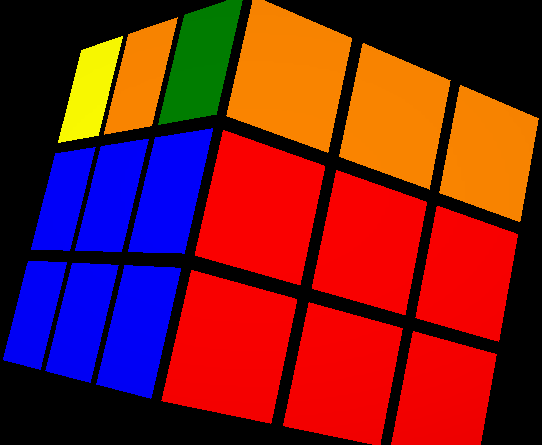
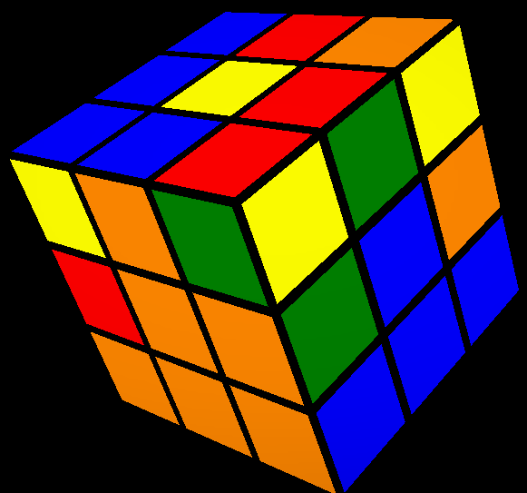
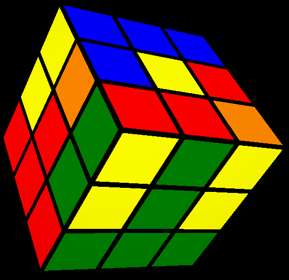
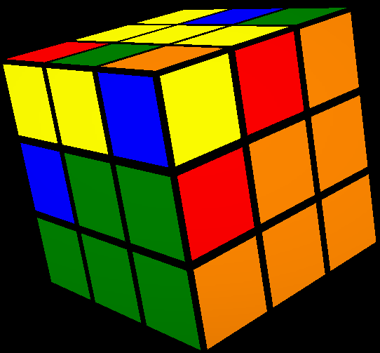
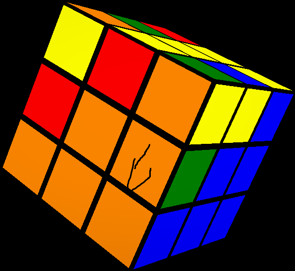
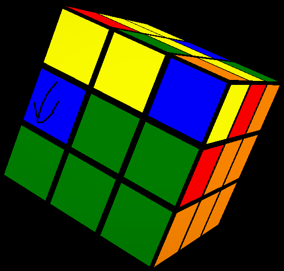

(تركيب القطع المجورة )حل الطبقة الوسطي في مكعب روبيك
نسيب الزائد الابيض للتحت ثم نعمل

_-_-_-_-_-_-_-_-_
ندور علي قطعة مجاورة ليس به اصفر في الطبقة العلوية
_-_-_-_-_-_-_-_-_
ونوديه عند سنترها ونشوف هي عيزة تنزل فين علي اليمين ولا علي اليسار
_-_-_-_-_-_-_-_-_
لو كانت عيزة تنزل علي اليمين زي

نعمل U R U' R'نلف المكعب لليمين U' L' U L
_-_-_-_-_-_-_-_-_
لوكانت عيزة تنزل علي اليسار زي

نعمل U' L' U L نلف المكعب لليسار U R U' R'
_-_-_-_-_-_-_-_-_
لو ملقناش فوق ومكنش المكعب احل اول طبقتين الي تحت والي فقيه

_-_-_-_-_-_-_-_-_
لو كانت علي اليمين زي

نعمل U R U' R'نلف المكعب لليمين U' L' U L
_-_-_-_-_-_-_-_-_
لوكانت علي اليسار زي

نعمل U' L' U L نلف المكعب لليسار U R U' R'
_-_-_-_-_-_-_-_-_
وكدة نكون شرحنا كيفية حل الاول طبقتين
فديو توضيحي عن الذي شرح
التالي
السابق